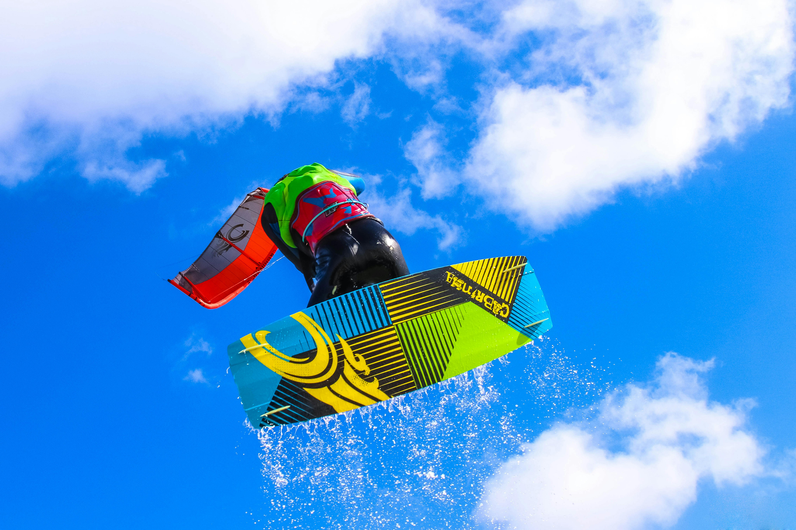

Le Kite (Voile)
La voile est le moteur du kitesurf. Pour débuter, on recommande une voile de 9 à 12m² qui offre une bonne plage de vent (12–25 nœuds). Les kites à boudins sont les plus répandus et les plus polyvalents.

La Barre de Contrôle
La barre relie le pilote à la voile via les lignes. Elle intègre un système de sécurité (Quick Release) indispensable. Pour les débutants, on privilégie une barre simple avec un bon système de dépower.

La Planche (Twin-tip)
La twin-tip (symétrique) est la planche idéale pour débuter. Taille conseillée : 140 x 42 cm pour un adulte. Elle permet de rider dans les deux sens sans changer de position.

La Sécurité
Le harnais (ceinture) pour supporter la traction. La combinaison néoprène selon la saison. Le casque et le gilet sont fortement recommandés pour les débutants.

La Planche de Foil
Pour le pumping, on utilise des planches courtes et légères (3'6" à 4'8") en carbone. Elles sont souvent faites avec un rail US qui permets de mettre plusieurs types de foils. Pour le Kite, il est recommandé d'utiliser des straps pour maintenir les pieds.

Le Foil
Pour débuter, une grande aile avant (1800–2200 cm²) est conseillée : décollage à basse vitesse plus facile. Les mâts de 65–75 cm offrent un bon compromis stabilité/performance.

Protection & Sécurité
Le foil est tranchant : casque, gilet de protection, combinaison épaisse sont obligatoires. Des chaussures de surf ou booties protègent les pieds de la coupure lors des chutes.
💡 Le conseil de Pump & Kite
Pas besoin d'acheter du matériel pour commencer ! Tout le matériel est fourni lors de nos cours. Commence par apprendre les bases avec nous, et investis dans ton propre équipement une fois que tu sais ce qui te convient. N'hésite pas à me contacter pour un conseil personnalisé en fonction de ton budget et de tes objectifs.